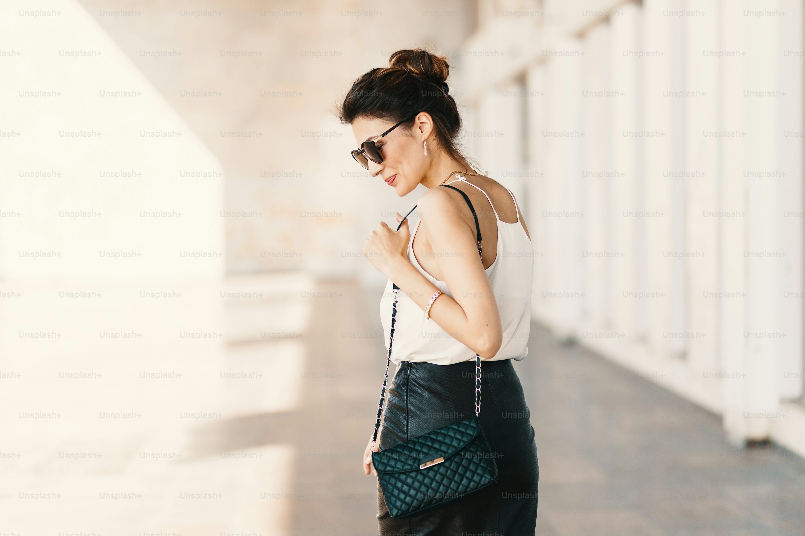

Don't miss out
When you follow someone, you'll see their posts in your Timeline. You'll also get more relevant
recommendations.
Follow 1 or more accounts

BTS Charts Daily

@btschartdailyc
Welcome to NEWS and CHARTS source of
@BTS_twt
& Memebers | Fan account
Vijay fans Trends
@VijayFansTrends
The Official Trends Page for Thalapathy
@actorVijay-@tvkvijayhq,
Backup Account @VijayTrendsPage

Global Eye News
@GlobalEyeNews
International Affairs, Politics, Sports, Trends, and Global Happenings from South Asia to the Middle
East and Beyond.

NewsWire
@NewsWireLK
Welcome to NEWS & Real time update media account based in Sri Lanka.